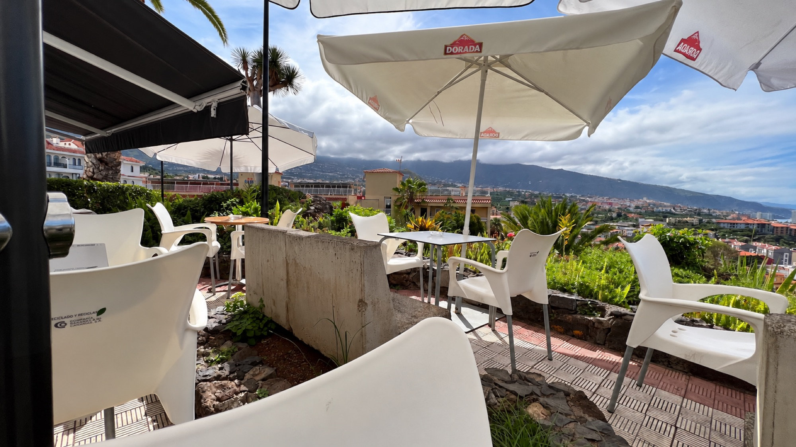

Puerto de la CruzAlberto's
Bar mit Aussicht · Puerto de la Cruz · am Parque Taoro
4,61.821 Google-Bewertungen
Den schönsten Sonnenuntergang im Puerto sieht man von hier oben: die Stadt, der Atlantik und der Teide – mit einem Barraquito oder einer Sangria in der Hand.
01Die Aussicht
Hinaufgehen. Hinsetzen.
Schauen.
Alberto's liegt hoch über der Stadt in der Calle Malpaís, nur ein paar Schritte vom Parque Taoro. Von der Terrasse – weiße Sonnenschirme, vulkanischer Garten – liegt Ihnen ganz Puerto de la Cruz zu Füßen.
- 01
Die Stadt
Dächer und Palmen des Puerto auf einen Blick.
- 02
Der Atlantik
Der ganze Horizont, nichts im Weg.
- 03
Der Teide
An klaren Tagen der Gipfel am Ende des Tals.
02Heute auf der Terrasse
jeden Abend
Sonnenuntergang
Puerto de la Cruz
Kommen Sie gegen für einen Tisch mit Aussicht.
04Bewertungen
Was unsere Gäste
hier oben sagen
“Ein super gemütlicher Ort – man setzt sich hin und möchte gar nicht mehr aufstehen.”“Herrliche Aussicht, freundliches Personal, attraktive Preise und einfach köstliches Essen.”“Die Bar serviert eine der besten Sangrias, die ich je getrunken habe.”“Ich habe die Barraquitos bestellt – sie waren absolut fantastisch.”“Auch die Cocktails sind richtig lecker.”“Albertos Team ist immer freundlich, und wir genießen es, dort etwas zu trinken oder zu essen.”05Anfahrt
Oben,
am Parque Taoro
Calle Malpaís 5
38400 Puerto de la Cruz, Teneriffa
Etwa 15 Minuten zu Fuß vom Zentrum – bergauf und mit Treppen. Wer hochsteigt, sagt: Es lohnt sich. Oder bequem mit Taxi oder Auto.
28°24′N · 16°33′W · PARQUE TAORO
Öffnungszeiten
- Mittwoch bis Montag
- 12:00 – 23:00
- Dienstag
- Ruhetag
Zeiten ohne Gewähr. Rufen Sie uns an, um sie zu bestätigen oder einen Tisch zum Sonnenuntergang zu reservieren.
922 38 60 61Wir akzeptieren Visa, Mastercard, American Express und Diners.